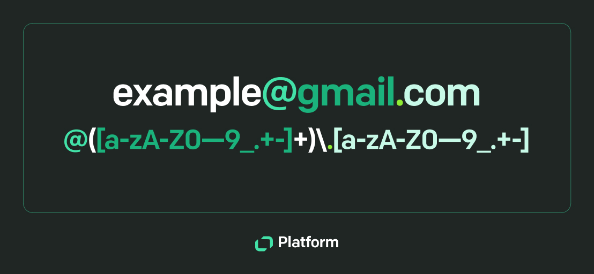

Ubuntu Webserver
Das Bild zeigt eine E-Mail-Adresse und ein Beispiel für einen regulären Ausdruck, der zum Erkennen oder Prüfen von E-Mail-Domains verwendet wird.
prompt: Chatgpt
Development Fusion
Ein Webserver ist ein zentraler Bestandteil moderner IT-Infrastrukturen. Er dient der Bereitstellung von Webseiten, Webanwendungen und Online-Diensten über das Internet oder ein lokales Netzwerk. Eine weit verbreitete und zuverlässige Lösung für den Betrieb eines Webservers stellt das Open-Source-Betriebssystem Ubuntu Server dar, das auf der Linux-Distribution Debian basiert und speziell für Serveranwendungen optimiert ist. In der modernen Softwareentwicklung spielt der Begriff Development Fusion eine immer groessere Rolle. Darunter versteht man die Verbindung verschiedener Entwicklungsdisziplinen und -technologien zu einer integrierten Entwicklungsumgebung, die eine effiziente und flexible Programmierung ermoeglicht. Ein wichtiger Bestandteil dieser Fusion ist der Umgang mit RegEx, Typenfunktionen, dem Dateisystem und UDFs (User Defined Functions). RegEx (Regular Expressions) sind ein leistungsstarkes Werkzeug, um Textmuster zu erkennen, zu validieren oder zu transformieren. In der Praxis werden sie verwendet, um Eingaben zu ueberpruefen, Log-Dateien zu durchsuchen oder bestimmte Daten aus grossen Textmengen zu extrahieren. Durch ihre Integration in moderne Entwicklungsumgebungen koennen Entwickler komplexe Textoperationen in nur wenigen Codezeilen umsetzen. Beispielsweise kann man mit einem einfachen RegEx-Muster alle E-Mail-Adressen aus einer Textdatei filtern oder Ueberpruefungen von Benutzereingaben automatisieren. Typenfunktionen sind ein weiteres zentrales Element moderner Entwicklung. Sie erlauben es, Datentypen dynamisch zu analysieren, umzuwandeln oder anzupassen. In Programmiersprachen wie Python oder TypeScript ermoeglichen Typenfunktionen die Kombination von statischer und dynamischer Typpruefung. Das fuehrt zu sichererem Code und reduziert Laufzeitfehler. Innerhalb von Development Fusion dienen Typenfunktionen haeufig dazu, verschiedene Module mit unterschiedlichen Datentypen nahtlos zu verbinden. Das Dateisystem bildet die Grundlage jeder Entwicklungsarbeit, da hier alle Dateien, Konfigurationen und Skripte abgelegt werden. Eine effiziente Dateiverwaltung ist entscheidend fuer eine stabile Entwicklungsumgebung. Durch automatisierte Skripte koennen Dateipfade, Berechtigungen und Speicherstrukturen optimiert werden. In einer fusionierten Entwicklungsumgebung ist der Zugriff auf unterschiedliche Dateisysteme – lokal, in der Cloud oder auf Servern – oft integriert, was die Zusammenarbeit in Teams erleichtert. Schliesslich spielen UDFs (User Defined Functions) eine zentrale Rolle, um Entwicklungsprozesse individuell zu gestalten. Mit UDFs koennen Entwickler eigene Funktionen definieren, die ueber die Standardbibliotheken hinausgehen. In Datenbanken, Skriptsprachen oder Analyseumgebungen ermoeglichen UDFs die Erstellung von wiederverwendbaren Routinen, die speziell auf die Beduerfnisse eines Projekts zugeschnitten sind. Zusammenfassend vereint Development Fusion diese Technologien zu einem harmonischen Gesamtsystem. Durch die Kombination von RegEx, Typenfunktionen, Dateisystemverwaltung und UDFs entsteht eine flexible und leistungsfaehige Entwicklungsplattform, die sowohl Produktivitaet als auch Codequalitaet nachhaltig verbessert.
Fazit
Zusammenfassend lässt sich sagen, dass Development Fusion eine moderne und ganzheitliche Herangehensweise an die Softwareentwicklung darstellt. Durch den gezielten Einsatz von RegEx, Typenfunktionen, einer strukturierten Arbeit mit dem Dateisystem und der Nutzung von UDFs koennen Entwicklungsprozesse deutlich effizienter gestaltet werden. Diese Kombination foerdert nicht nur die Automatisierung und Wiederverwendbarkeit von Code, sondern auch die Qualitaet und Stabilitaet von Softwareprojekten. Development Fusion ist somit ein wichtiger Schritt hin zu flexiblen, intelligenten und nachhaltigen Entwicklungsumgebungen.